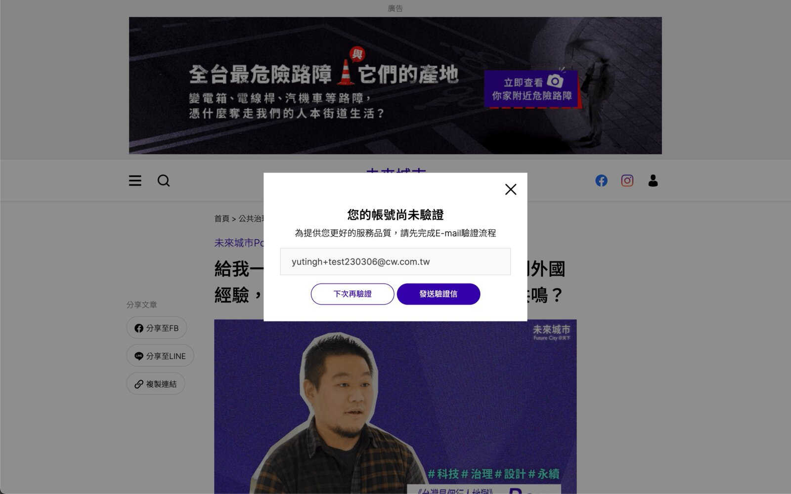

<article>
  <div class="container">
    <div class="row">
      <div class="mockup-with-video">
        
        <div class="ratio">
          <video
            src="assets/images/future-city/overall-page.mp4"
            poster="assets/images/future-city/overall-page.png"
            loop autoplay muted playsinline
          ></video>
        </div>
      </div>
    </div>
    <div class="row justify-content-center">
      <div class="col-md-10">
        <h2 class="text-surface mt-40 mb-20">
          首次嘗試
        </h2>
        <ul class="list-reset my-20">
          <li>第一次整個網站都使用 Vue 寫，很多寫法要邊做邊翻文件</li>
          <li>第一次要研究怎麼樣將廣告代碼填入，並可以利用頻道分眾投放</li>
          <li>第一次要串接會員驗證，學習 JWT 與 axios 攔截器，自動更新 Token</li>
        </ul>
        
        <div class="h5 text-secondary mt-10 mb-0">萬惡的會員驗證機制，做的時候很苦但也學到最多的</div>
      </div>
    </div>
  </div>
</article>
